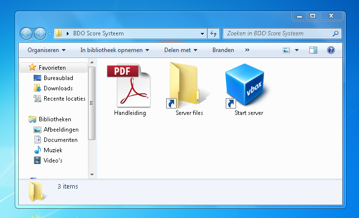
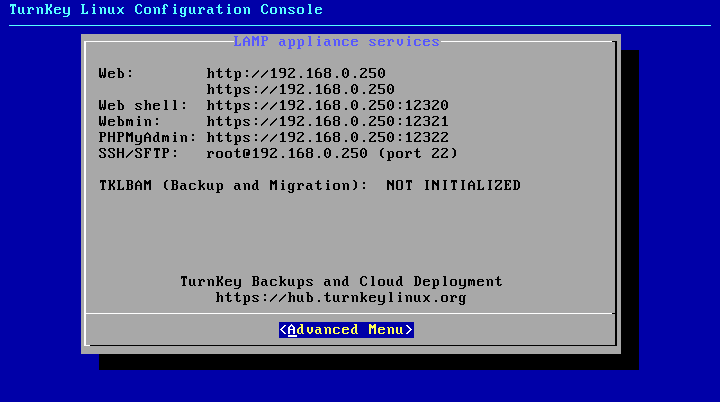
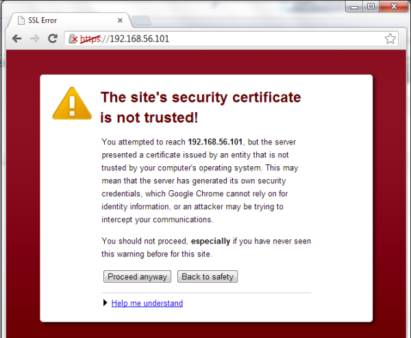
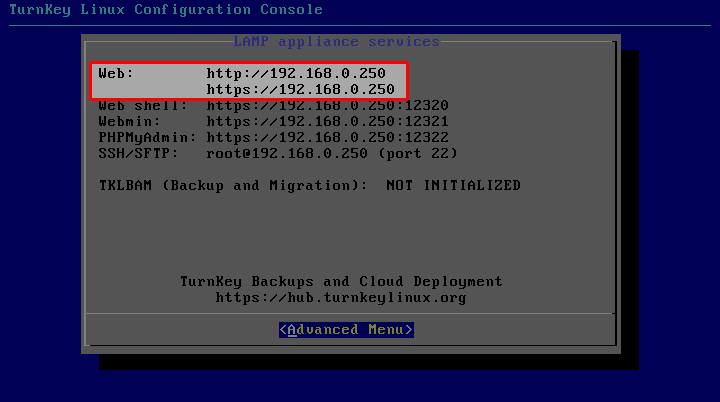
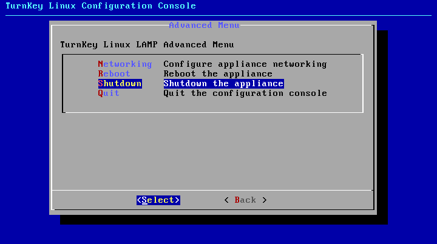
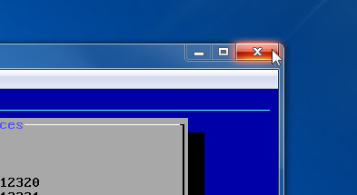
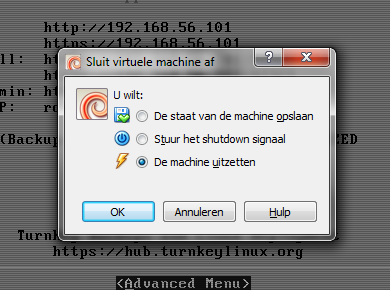

Volgende files zijn geleverd met het BDO Scoresysteem:
Handleiding Deze handleiding.
Server files Deze files worden gebruikt door de server. Tijdens het nomale gebruikt is het niet nodig deze map te openen.
Start server Dubbelklik op dit icoon om de server op te starten.
Dubbelklik op het item Start server en wacht tot de server volledig is opgestart. U ziet volgend scherm:

Om verbinding te maken met de server en zo de applicatie te gebruiken surft u met uw browser naar http://scoresysteem of https://scoresysteem.
Bij het https adres kan uw verbinding niet worden afgeluisterd, het zou wel kunnen dat uw browser een waarschuwing geeft
maar deze kan veilig worden genegeerd door te klikken op Proceed anyway.

Indien u op deze manier geen verbinding zou kunnen maken surft u naar het adres dat in het serverscherm wordt vermeld achter Web. Ook hier is er een http en https versie beschikbaar.

Om de server na gebruik weer af te sluiten navigeert u met het toetsenbord naar Advanced Menu en dan Shutdown.

Of klikt u op het rode kruis rechtboven in het venster en kiest u voor De machine uitzetten.

